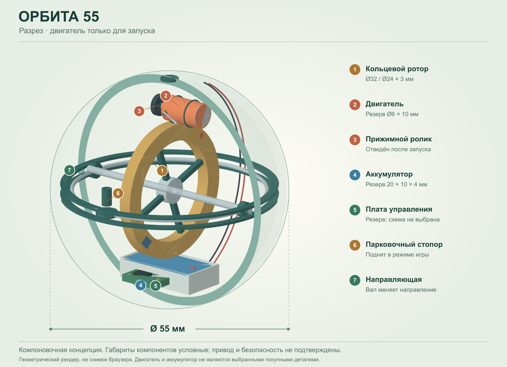

В этой модели
- Сфера Ø55 мм; условная стенка 2 мм.
- Расположение основных узлов и траектория отвода стартера.
- Разрез, прозрачная оболочка и разнесённый вид.
- Разделение «мотор включён» / «игра руками».
ЭЛЕКТРОСТАРТ · РУЧНАЯ ИГРА
Двигатель раскручивает ротор и отводится.
Дальше — движение ваших рук.
наружный диаметр
5,5 сантиметра
Попробуйте браузер с WebGL и аппаратным ускорением. Ниже доступен статичный разрез.
Открыть разрезЛОГИКА КОМПОНОВКИ
Во время пуска обойма находится в парковочном положении. Маленький ролик передаёт вращение от двигателя на обод ротора. Затем вся каретка смещается на 3 мм в сторону и 1,5 мм вверх: контакт разрывается, мотор отключается, стопор освобождает обойму.
Аккумулятор и электроника не вращаются вместе с ротором. Два прежних шаровых груза заменены симметричным кольцом. Цветные отметки на кольце нужны только для наблюдения за вращением.
Тонкие линии у оболочки показывают резерв маршрута проводки. Каналы, гибкие подводы и полноценная электрическая схема ещё не разработаны.
Мотор, аккумулятор и плата пока заданы резервными объёмами. Мощность, пусковой ток, ёмкость, длительность работы и безопасная скорость не определены.
Контактный ручной привод, пружина возврата, связь каретки со стопором, зарядка, балансировка, защита при падении и прочность корпуса требуют отдельного проектирования и испытаний. Зазоры номинальные, без производственных допусков.

Скачать 3D-сборку GLB · Разнесённый вид · Размеры и ограничения
GLB — неподвижная визуальная сборка в метрах, не производственный CAD. Изображения построены по геометрии модели.